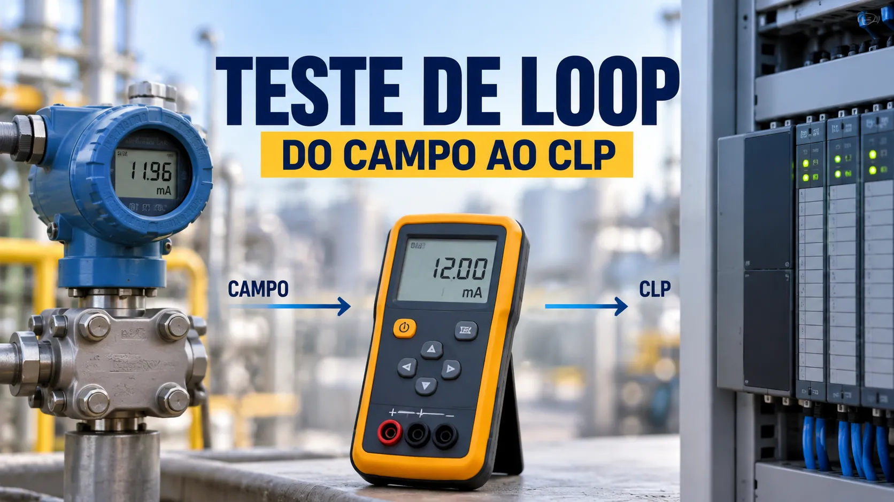

Teste de Loop em Instrumentação: como garantir o sinal do campo ao PLC/CLP
Conteúdo técnico: ALOGY Engenharia · Atualizado em: 11/09/2026

O teste de loop em instrumentação valida se o sinal gerado no campo chega corretamente ao sistema de controle. Em uma malha analógica, o sinal pode sair de um transmissor em 4-20 mA, passar por cabo, caixa de junção, bornes, barreiras e cartão analógico até ser convertido em unidade de engenharia no PLC/CLP ou DCS.
Quando esse caminho não é testado ponta a ponta, a planta pode operar com escala incorreta, borne trocado, canal errado, falha de alimentação ou indicação divergente no supervisório.
O que é loop check?
Loop check é o procedimento usado para verificar continuidade, configuração, sentido e coerência de uma malha de instrumentação. Ele confirma se o valor aplicado ou simulado no campo é representado corretamente no sistema de controle e, quando aplicável, nos alarmes e elementos finais.
Por que é diferente de calibração?
A calibração compara um instrumento com um padrão de referência e avalia erro. O teste de loop verifica a cadeia instalada. Um transmissor pode estar calibrado e ainda assim chegar errado ao supervisório por causa de range, escala, ligação ou configuração do cartão.
Exemplo prático em 4-20 mA
Considere um transmissor de pressão configurado de 0 a 10 bar. Em uma escala linear, 4 mA = 0 bar, 12 mA = 5 bar e 20 mA = 10 bar. Durante o teste, esses pontos podem ser simulados para confirmar a leitura no cartão, PLC/DCS e HMI.
Para um teste mais completo, use 0%, 25%, 50%, 75% e 100%: 4, 8, 12, 16 e 20 mA. Se a malha usar função não linear, square root ou split range, os valores esperados devem seguir a configuração real.
Sequência prática de teste
- Confirme TAG, variável, LRV, URV, unidade e canal de I/O.
- Coloque a malha em condição segura conforme procedimento e operação.
- Defina se o teste será por simulação de corrente, aplicação da variável ou atuação do elemento de campo.
- Aplique os pontos e registre valor no campo, raw do cartão e unidade de engenharia.
- Confirme indicação em PLC/DCS, HMI/SCADA, alarmes e tendências quando fizer parte do escopo.
- Se houver divergência, separe falha de instrumento, cabeamento, I/O, scaling e lógica.
- Registre resultado, pendências e condição final da malha.
Falhas comuns encontradas
- LRV/URV diferentes entre transmissor e PLC.
- AI configurada para faixa incompatível.
- Escala invertida ou engenharia errada.
- Bornes/canais trocados.
- Queda de tensão ou alimentação insuficiente.
- Barreira/isolador configurado incorretamente.
- Alarme ou intertravamento usando TAG/canal incorreto.
- HMI mostrando unidade ou range diferente do controlador.
Quando realizar?
Loop checks são especialmente importantes em commissioning, FAT/SAT de integração, partidas, ampliações, troca de instrumentos, substituição de cartões, alterações de lógica ou intervenções em cabos, bornes e painéis.
Documentação do teste
O registro deve identificar TAG, variável, range, sinal aplicado, raw/entrada, valor de engenharia, indicação na HMI/SCADA, status e observações. Em projetos maiores, um checklist por malha ajuda a controlar pendências e retestes.
Ferramentas relacionadas
Como a ALOGY pode apoiar
A ALOGY atua com instrumentação industrial, automação, testes de malha, documentação técnica e apoio em commissioning. O objetivo é reduzir incerteza entre campo e sistema de controle e entregar evidência clara do que foi testado.
Aviso técnico
Este conteúdo é informativo. Testes que possam atuar equipamentos, alarmes, intertravamentos ou processo devem seguir liberação operacional, análise de risco e procedimentos aplicáveis da instalação.